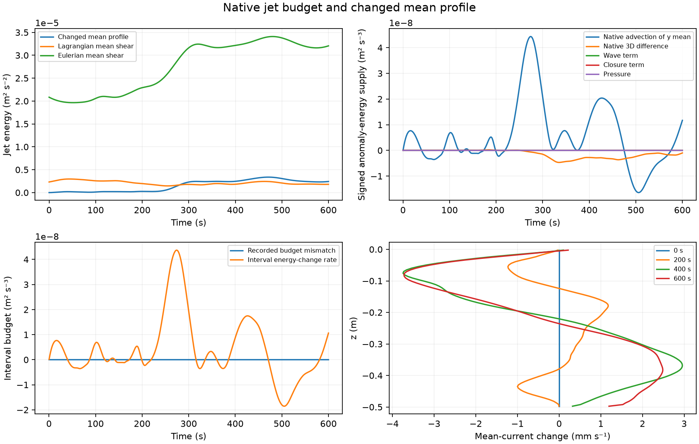

The plotted advection decomposition uses the solver's own tendencies. The 3D contribution is the difference between full-field advection and advection of the replicated y mean. The residual compares recorded energy changes with sampled endpoint production; it is neither forced to zero nor labelled pure dissipation. The mean-current anomaly is measured relative to the same run's initial profile.
